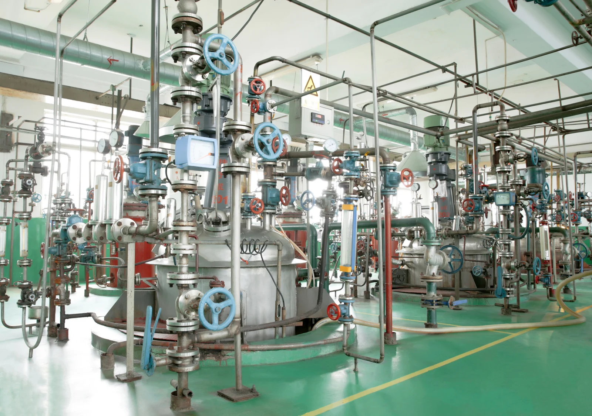

Sustainability in action
Responsibility in
enzyme manufacturing.
Our long-term purpose is healthier lives and a healthier planet. For SUNSON, this also raises practical questions about how enzyme preparations are made.
Start with our operations
SUNSON brings strain research, enzyme production and application development together. Our manufacturing operations include Yinchuan and Cangzhou.
These operations are the setting for considering the materials, resources and people involved in making an enzyme preparation.
Our manufacturing background
From fermentation
to an enzyme preparation.
- Manufacturing locations
- Our operations in Yinchuan and Cangzhou form part of SUNSON’s manufacturing background. Each location brings its own production setting to the discussion.
- Connected production stages
- Our manufacturing background includes fermentation, separation, membrane concentration and formulation. Materials, water and energy enter the process at different stages.
- A preparation for its intended use
- The finished preparation has a defined identity, physical form and specification. Its intended use and handling are part of the conversation between manufacturing, application teams and customers.
Resources, people and progress
The resources and people
behind production.
Materials, water and energy are practical considerations throughout enzyme production. The discussion includes how inputs are used, how process materials are handled and what becomes waste.
People and product safety belong alongside those resource questions: the work being carried out, the materials handled and the preparation’s intended use all matter.
These are areas to consider in the context of each operation, from fermentation through to formulation and handling.
Know the company.
Understand the context.
Explore SUNSON’s research and manufacturing background, or discuss the information relevant to your supplier review.